Video
Example File
Guide
Reading Order Tool
The second step in the PDF accessibility process is: repair the document’s structure with the Reading Order tool. In this video I’ll demonstrate:
- Switching between page content group types.
- Changing a tag’s type.
- Removing an element from the tags tree.
- Tagging an untagged element.
Objectives
- State the two options for viewing "page content groups" in the Reading Order tool.
- Identify the process for using the Reading Order tool to remove an element from the tags tree.
- Describe the method for tagging an untagged element.
The Reading Order tool lets you view and edit the structure of a PDF. When an issue is identified in a PDF’s structure, this issue should be addressed in the source document when possible. I’ll point out these types of issues as I work through the example file.
While the Reading Order tool can be used to make PDFs more accessible, the tool itself may not be very accessible for some users. Some functionality requires vision, and very precise clicking-and-dragging. Also, it cannot be used for all types of tags. For example, you cannot create lists using this tool.
Page Content Groups
I’ll open the example file in Acrobat running on Windows. On the Tools navigation panel I will select “Accessibility”, and then select “Reading Order” on the pane.
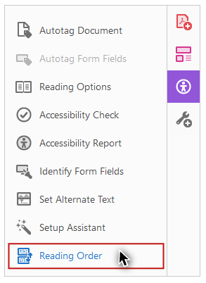
The Reading Order dialog opens. Because I don’t have any document element selected, all of the buttons for adding Tags are disabled. Any element that is tagged will be surrounded by a gray box with a black border. These boxes are called "regions."
Page content order
By default, on the Reading Order tool the “Show page content groups” checkbox will be checked,
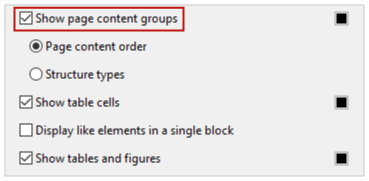
and the “Page content order” option will be selected.
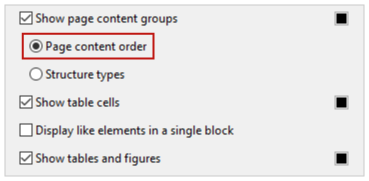
With this option selected, each region will have a number in the white label box in its upper-left corner.
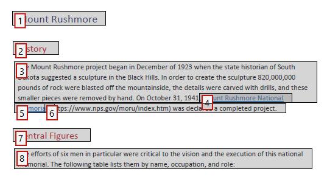
This number refers to the position of this element in the content order. This may, or may not, match the order that the document’s elements will be read by screen reading software.
Structure types
Because I want to focus on the structure of this document before I review its content order, under the page content groups checkbox I’ll select the “Structure types” option.
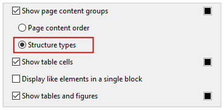
Now the regions have alphanumeric labels that correspond to their type.
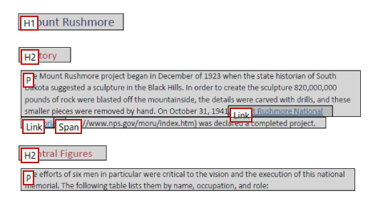
For example, the text at the top of the document is tagged as “H1”—Heading 1.
It is possible to change a tag with the Reading Order tool, but we recommend changing a document’s structure in the source document when possible.
Changing a Tag
To demonstrate how to change a tag I’ll scroll down to page two where the first heading on the page—”The Workers”—is identified as “H3” for Heading 3. This heading should be the same level as the “Central Figures” heading above it—Heading 2.

To change a tag:
-
Click on the region’s white label to select the element.
-
Click the appropriate button on the Reading Order tool.
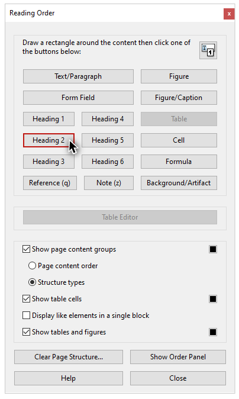
I’ll click “Heading 2.”
Empty Tags
A PDF may also contain elements that should not be included in the tags structure. For example, a PDF created from a Word document will often have empty tags. When the image of men in harnesses on this page was exported from Word, its container element was tagged as a paragraph. This tag is empty, so screen reading software will say something like “blank” when the tag is read.
Creating an Artifact
This is not a big deal, unless a document has many empty tags. For example, if ten paragraph breaks were used to create space between two elements in a source document, each one would be tagged as a paragraph. To prevent a screen reader from saying “blank, blank, blank, blank, blank, blank, blank, blank, blank, blank”, this large group of empty tags should be removed from the structure.
To remove an element from the tags structure:
-
Select the region’s white label.
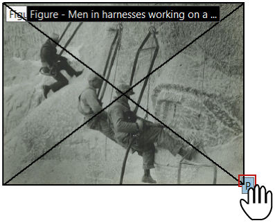
-
Select “Background/Artifact” on the Reader Order tool.
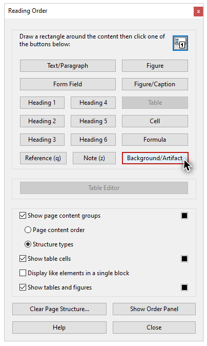
The region disappears. This element has been removed from the tags tree, and it has been identified as an artifact.
I’ll scroll down to the image of Theodore Roosevelt on page three. In a previous video, this image was flagged in the Accessibility Checker report for missing alternate text, and this is stated directly on its label: “Figure - No alternate text exists.” This image should have been marked as decorative in Word. The best practice is to return the source document, correct this error, and export an updated PDF. However, to demonstrate how to fix this issue as a “one-off”, I’ll also make this element an Artifact. Please remember that any element that is identified as an artifact will still be visible in the document view, but it is no longer tagged, so it will not be presented to screen reading software users.
Tagging Untagged Content
Next I’ll scroll down to the bottom of the last page. The “©2022 WebAIM” footer text is not contained in a region. This content is not tagged, and it will not be available to screen reading software. By default, footers exported from Office are not tagged, so that screen reader users won’t hear them repeated on every page. We recommend making footer text accessible by tagging it on the last page that it appears on.
I'll use my mouse to click and drag a box around this footer text. Acrobat is very picky about selecting text, so I want to make sure that the selection box I draw is bigger than the content I want to tag.
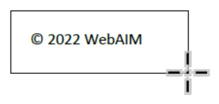
Once I see that all of the text in the footer is highlighted,
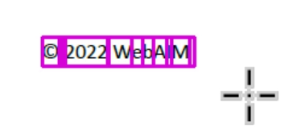
I will click the “Text/Paragraph” button in the Reading Order dialog. This element now has a region surrounding it, it is labeled with a “P”, and it has been added to the tags tree.
Now that you have learned how to repair a document's structure with the Reading Order tool, you're ready for the last step: review and repair content order and tags order.